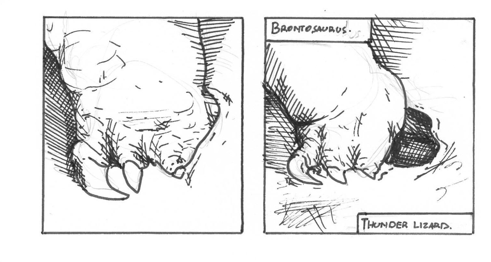
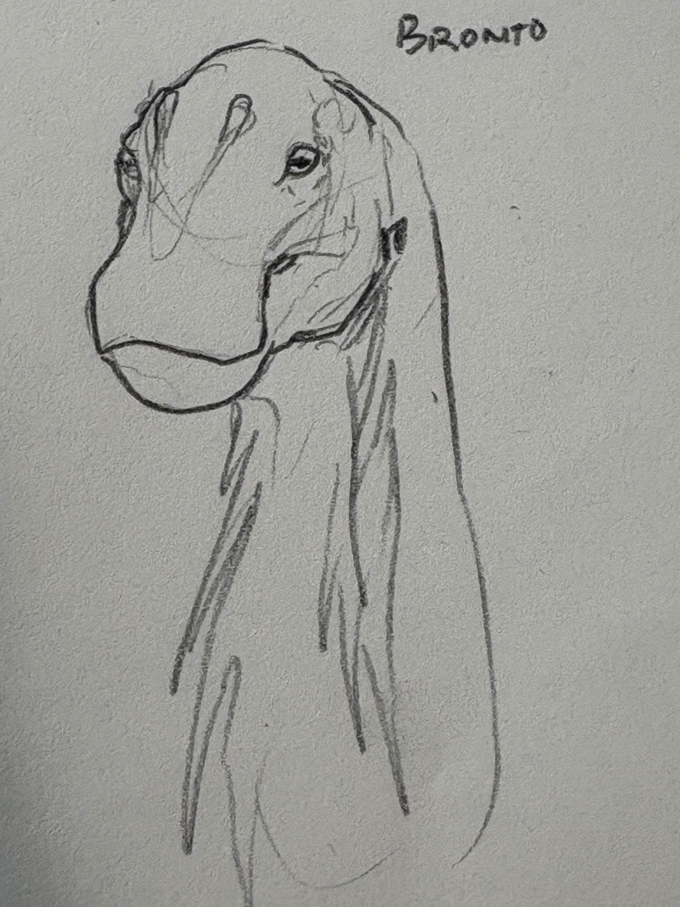
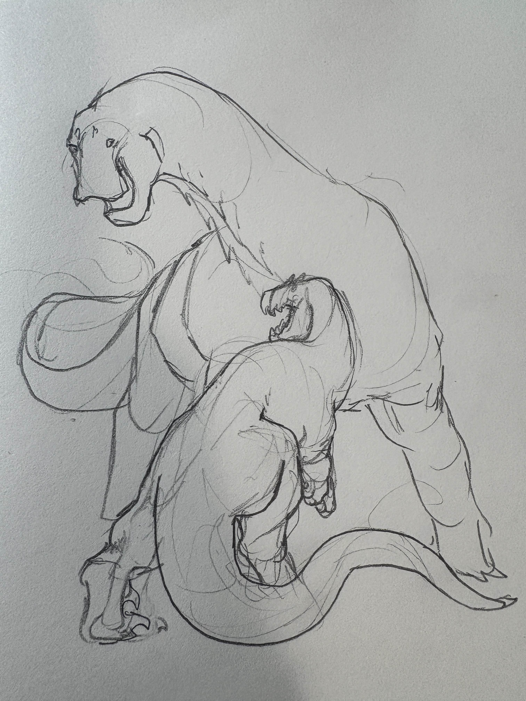
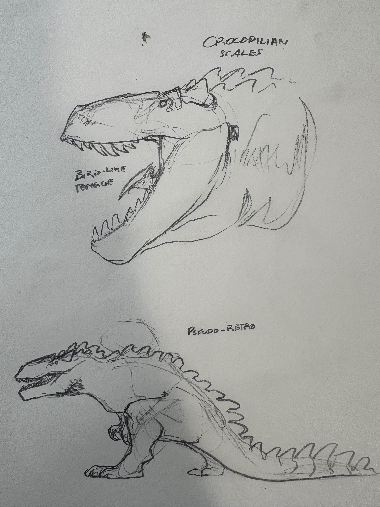

These lands are savage.
Somewhere beyond the reaches of time and space, lie an untamed frontier ruled by grand beasts beyond humanity's most ancient imagination; Dinosaurs. Where titanic sauropods walk alongside fierce theropods. Where savagery is the code and the wilderness is unbroken.
Welcome to the
The Tale
Our tale starts in the ancient floodplains, before there were bison to wander the great grasslands and before there were even grass to make the plains. In this fern dominated wetland, titans create craters with their footfalls, and fearsome theropods greater than

Concept Art
Exclusive behind the scenes looks at Realm of Reptiles concept art

The Brontosaurus was a difficult dinosaur to figure out. It had to have a balance between expressiveness and the passive stoicness associated with reptiles.

The Brontosaurus was a difficult dinosaur to figure out. It had to have a balance between expressiveness and the passive stoicness associated with reptiles.

The Brontosaurus was a difficult dinosaur to figure out. It had to have a balance between expressiveness and the passive stoicness associated with reptiles.